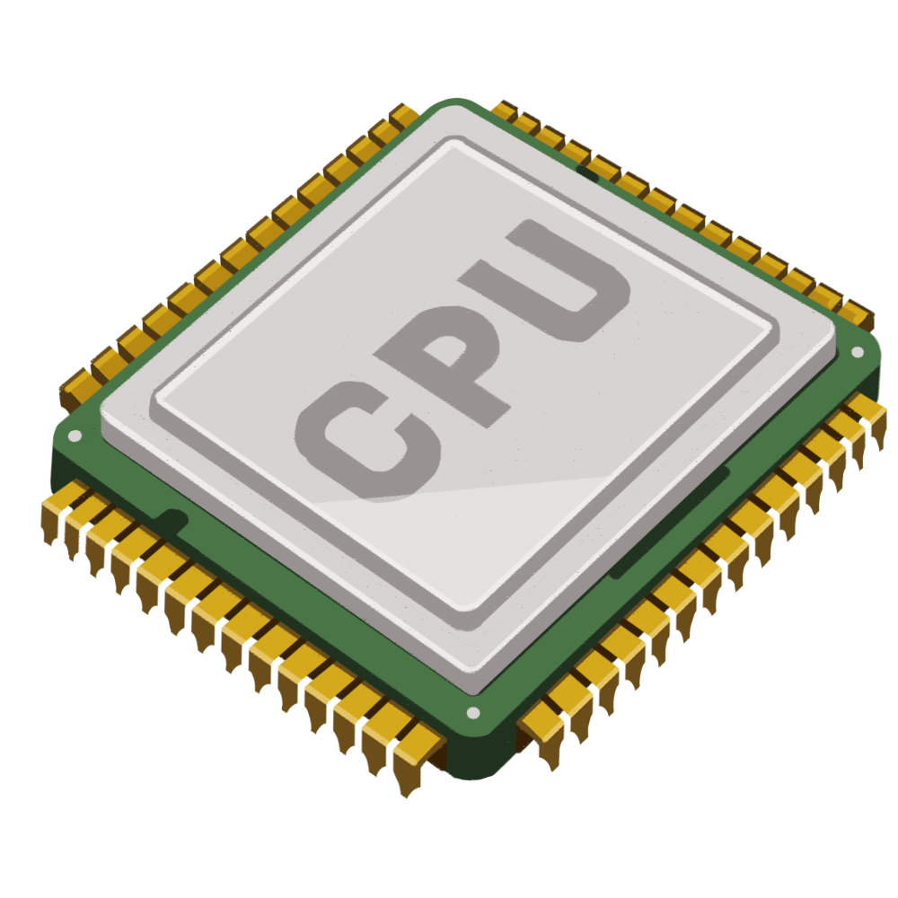

Often, in the case of desktops, people confuse the CPU with the cabinet. But it’s a small chip placed on the socket of the motherboard and is responsible for all the calculations and input/output operations to be done in order to process the data. Modern computers have small-sized CPU chips known as Microprocessors.
A microprocessor houses the two components of a processor, processing unit and the control unit, on a single small IC. Modern microprocessors come as single core or multi-core. A multi-core microprocessor such as the Intel Core i7, have more than one processing units (cores) present on a single chip.
The basic task a processor has to perform can be divided into three categories:
It is a memory supplement used by the CPU while it’s busy with the processing jobs. Cache memory contains the data which is often required by a CPU like the program instructions. It is easier for the CPU access the cache memory first than going for the larger ones. Cache memory is way faster than RAMs and hence it’s costlier. So, the size of the cache memory is kept very limited.
The cache memory is present on the CPU chip itself.
Cache memory comes in levels like L1 cache, L2 cache, and L3 cache. The CPU first searches for the required data in L1, then L2, then L3, and L4 if it exists. Finally, if none of the cache memories are able to provide the required data, it will access the RAM. Cache memory is very vital to a computer. A computer with a faster processor and less cache will perform worse than a slower processor with more cache. But this doesn’t mean that a 20-year-old processor puffed with excess cache could outperform a present-day processor.